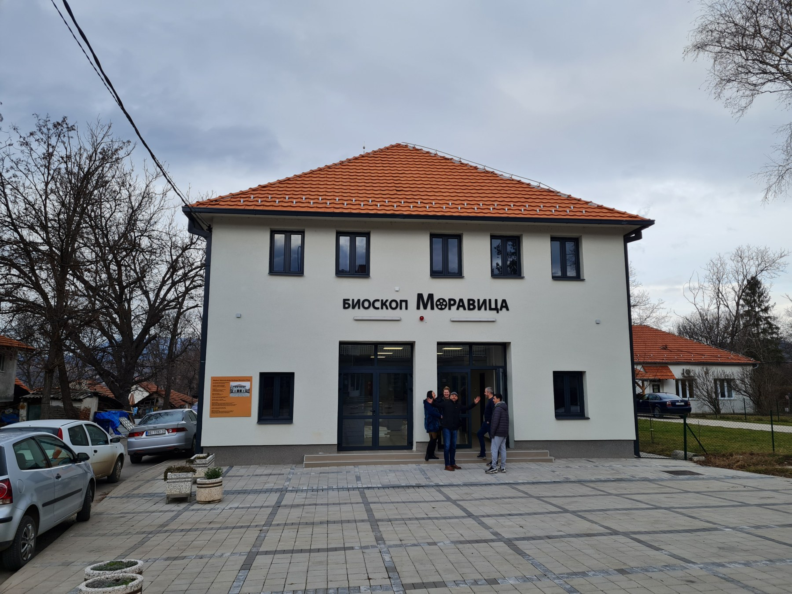

Rekonstrukcija i adaptacija nekadašnjeg bioskopa "Moravica" koji danas predstavlja objekat multifunkcionalnog tipa u kome su pored video projekcija predviđeni i scenski nastupi, realizovana je zahvaljujući sredstvima koja je Ministarstvo kulture dodelilo opštini Sokobanja putem konkursa "Gradovi u fokusu".
Rekonstrukcija bioskopa je u današnje vreme bila preka potreba i to je urađeno na način koji je omogućio da sadašnji bioskop podržava, najmodernijom opremom, sve zahteve savremene publike. Obnovljeni su bina, stolice, ventilacija, ozvučenje, grejanje, rasveta te su danas projekcije češće u ovoj adaptiranoj zgradi starog bioskopa.
Adaptacija nekadašnjeg bioskopa omogućila je da se sada u njemu osim filmskih projekcija mogu održavati i kulturno – umetničke priredbe, nastupi raznovrsnih grupa, pozorišne predstave, seminari i stručni skupovi, kojima može prisustvovati oko 200 posetilaca.
Bioskop koristi najmoderniju lasersku opremu i ima mogućnost prikazivanja filmova u 2D i 3D formatu.
200 Mesta
2D i 3D
